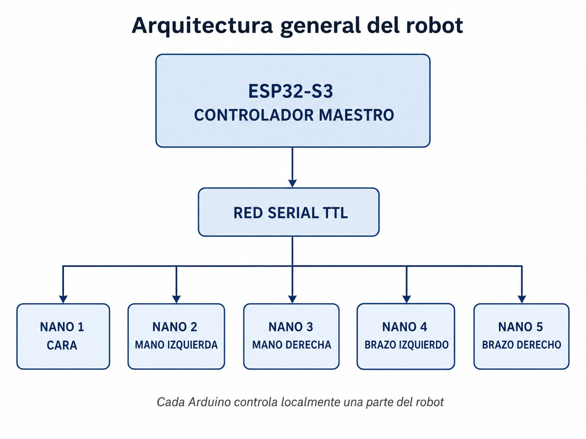
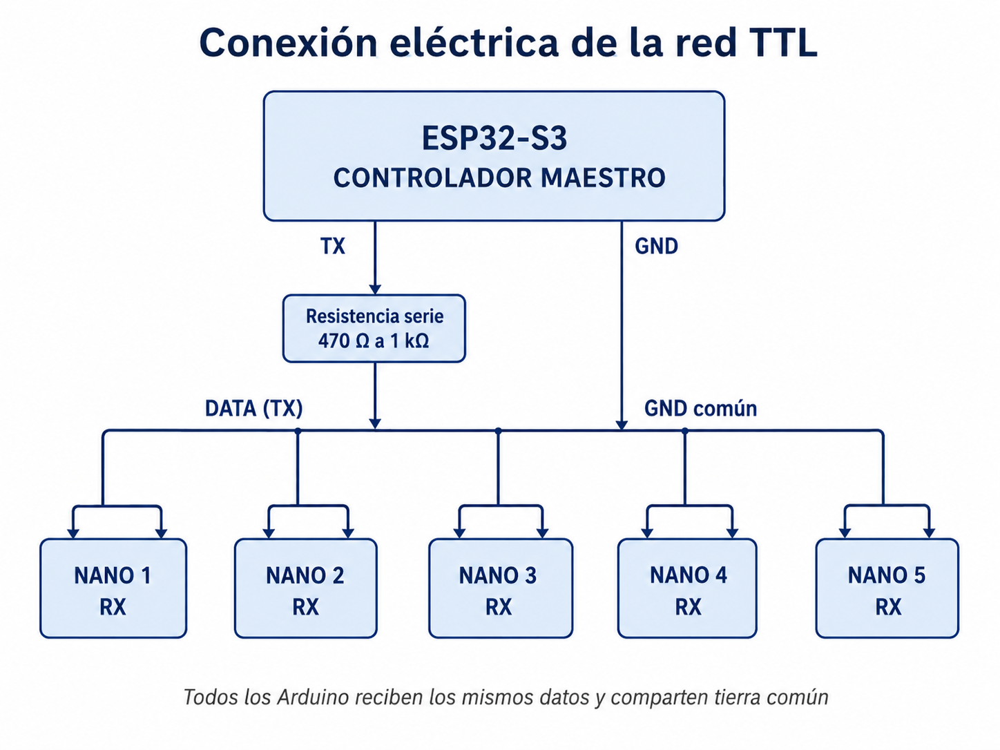
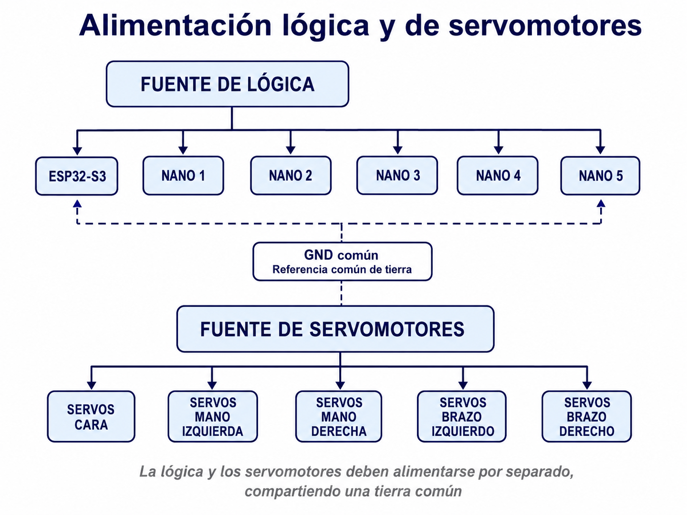
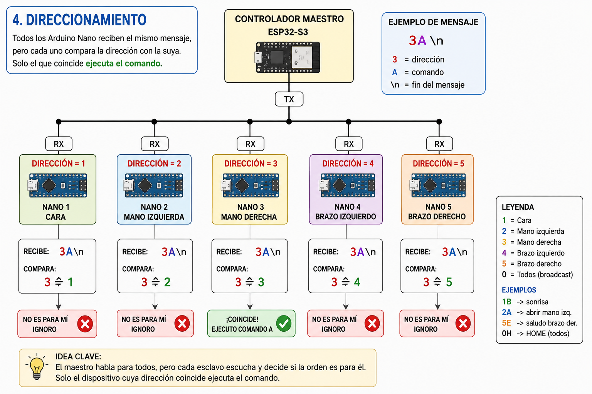
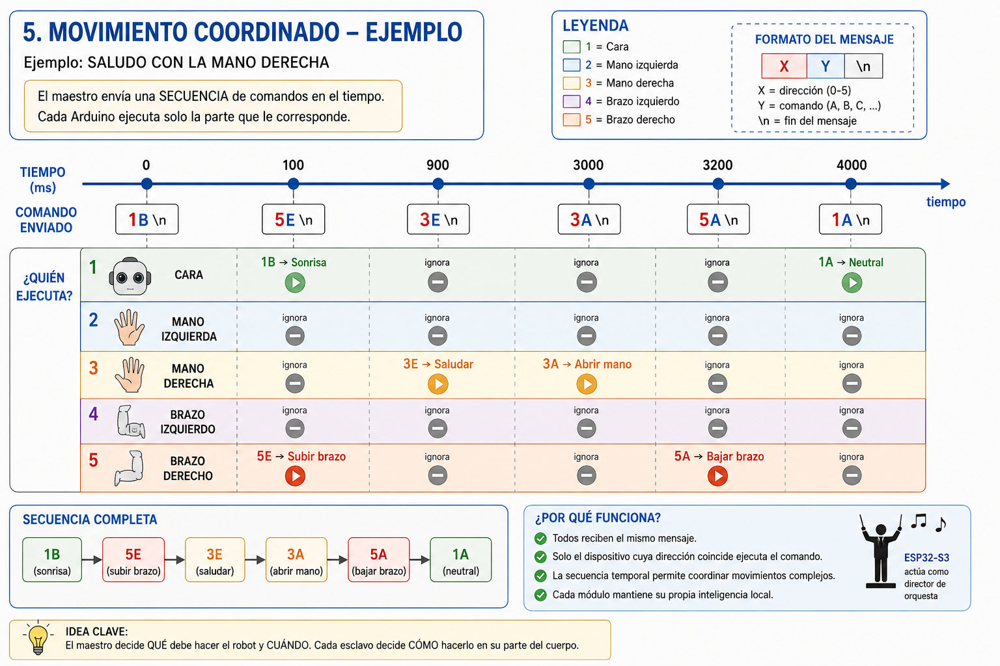
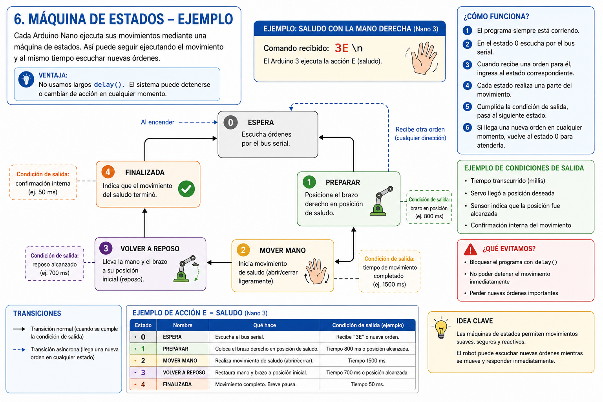
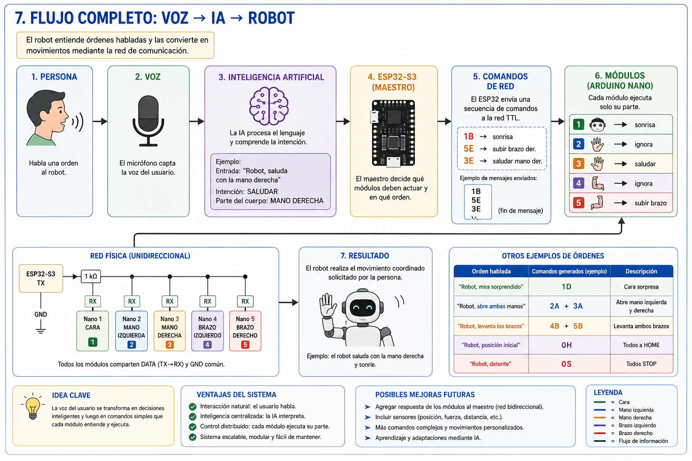
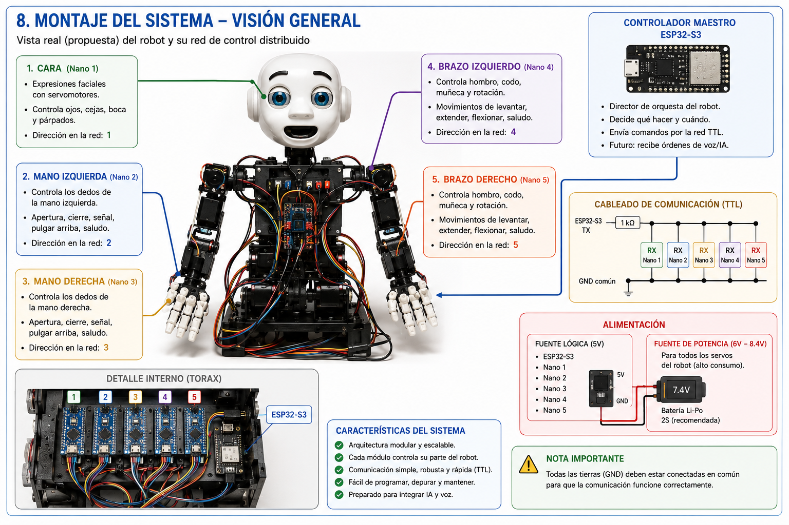

1. Idea central: un cerebro y cinco módulos autónomos
El robot no será controlado completamente por un único microcontrolador. El trabajo se distribuirá entre un ESP32-S3 maestro y cinco Arduino Nano esclavos.
Maestro
Recibe o genera órdenes de alto nivel y las distribuye por la red.
Ejemplo: “Levantar brazo derecho”.
Esclavo
Controla los servomotores de una zona específica del robot.
Ejemplo: hombro, codo y muñeca del brazo derecho.
Red
Transporta pequeños comandos identificados por una dirección y una acción.
Ejemplo: 5B.

2. Distribución funcional de los controladores
| Dirección | Controlador | Zona del robot | Ejemplos de funciones |
|---|---|---|---|
| 1 | Nano 1 | Cara | Sonrisa, sorpresa, enojo, posición neutral |
| 2 | Nano 2 | Mano izquierda | Abrir, cerrar, señalar, pulgar arriba |
| 3 | Nano 3 | Mano derecha | Abrir, cerrar, señalar, saludar |
| 4 | Nano 4 | Brazo izquierdo | Levantar, extender, flexionar, reposo |
| 5 | Nano 5 | Brazo derecho | Levantar, extender, flexionar, saludo |
| 0 | Todos | Broadcast | HOME, STOP u otras órdenes globales |
¿Por qué dividir el robot?
Una mano puede tener cinco servos. Un brazo puede tener varios grados de libertad. La cara puede requerir varios mecanismos. Si el ESP32 controlara directamente todos los servos, tendría que conocer los ángulos, velocidades, límites y secuencias de cada parte.
Servo hombro = 42° Servo codo = 86° Servo muñeca = 118°El maestro envía:
5B
El Nano 5 sabe internamente qué ángulos y velocidades corresponden al movimiento B.
3. Conexión de la red serial TTL
La primera versión utilizará una comunicación unidireccional:
Todos los Arduino reciben los mismos datos. Cada uno analiza la dirección y decide si la orden le corresponde.
ESP32-S3 TX
│
└── resistencia serie 470 Ω a 1 kΩ
│
├──────── RX Nano 1
├──────── RX Nano 2
├──────── RX Nano 3
├──────── RX Nano 4
└──────── RX Nano 5
ESP32 GND ────────┬──────── GND Nano 1
├──────── GND Nano 2
├──────── GND Nano 3
├──────── GND Nano 4
└──────── GND Nano 5

Niveles lógicos
El ESP32-S3 trabaja con lógica de 3,3 V. Los Arduino Nano tradicionales suelen utilizar 5 V. La transmisión será desde el ESP32 hacia la entrada RX de los Nano. No se debe aplicar una salida de 5 V de un Nano directamente a un GPIO del ESP32.
Alimentación y servomotores
Los servomotores deben utilizar una alimentación de potencia adecuada. No deben alimentarse desde el regulador del ESP32 ni desde el regulador de un Nano cuando la corriente requerida sea elevada.
FUENTE DE LÓGICA
├── ESP32-S3
├── Nano 1
├── Nano 2
├── Nano 3
├── Nano 4
└── Nano 5
FUENTE DE SERVOS
├── Servos cara
├── Servos mano izquierda
├── Servos mano derecha
├── Servos brazo izquierdo
└── Servos brazo derecho

4. Protocolo de comunicación
Se utilizará inicialmente un protocolo deliberadamente simple:
DIRECCIÓN + COMANDO + FIN DE MENSAJE
Ejemplo:
3C\n
| Elemento | Valor | Significado |
|---|---|---|
| Dirección | 3 | Mano derecha |
| Comando | C | Acción C almacenada en ese Arduino |
| Terminador | \n | Indica el final del mensaje |
Configuración serial propuesta
Velocidad: 19200 baudios Datos: 8 bits Paridad: ninguna Stop: 1 bit
Ejemplo de recepción
El maestro transmite:
3C
3 ≠ 1 → ignora
3 ≠ 2 → ignora
3 = 3 → ejecuta C
3 ≠ 4 → ignora
3 ≠ 5 → ignora

5. Tabla hipotética de movimientos
Estas acciones son ejemplos iniciales. Podrán modificarse cuando el robot real defina sus mecanismos y grados de libertad.
1 — Cara
1A Neutral
1B Sonrisa
1C Tristeza
1D Sorpresa
1E Enojo
2 — Mano izquierda
2A Abrir
2B Cerrar
2C Señalar
2D Pulgar arriba
2E Saludar
3 — Mano derecha
3A Abrir
3B Cerrar
3C Señalar
3D Pulgar arriba
3E Saludar
4 — Brazo izquierdo
4A Reposo
4B Levantar
4C Extender
4D Flexionar
4E Posición saludo
5 — Brazo derecho
5A Reposo
5B Levantar
5C Extender
5D Flexionar
5E Posición saludo
0 — Todos
0H HOME
0S STOP
La dirección 0 se reserva para órdenes globales.
6. Movimientos coordinados
El robot puede realizar acciones complejas enviando varios comandos en una secuencia temporal.
Ejemplo 1: saludar con la mano derecha
La cara adopta una sonrisa.
El brazo derecho comienza a subir.
La mano derecha comienza el saludo.
La mano vuelve a posición abierta.
El brazo vuelve a reposo.
La cara vuelve a neutral.
Ejemplo 2: representar sorpresa
1D → cara sorprendida 2A → mano izquierda abierta 3A → mano derecha abierta 4B → levantar brazo izquierdo 5B → levantar brazo derecho
Los mensajes pueden enviarse muy próximos entre sí, obteniendo un movimiento visualmente simultáneo.
Ejemplo 3: señalar hacia la derecha
1A → rostro neutral 5C → extender brazo derecho 3C → mano derecha adopta gesto de señalar

7. Filosofía de programación de los Arduino Nano
Todos los esclavos pueden utilizar una estructura de programa muy parecida. La diferencia principal será su dirección y las funciones que implementan sus movimientos.
const char MI_DIRECCION = '3';
recibir mensaje;
separar:
direccion
comando
si direccion == MI_DIRECCION:
ejecutar comando
si direccion == '0':
ejecutar comando global
si no:
ignorar
Evitar movimientos bloqueantes
Un error común sería construir secuencias utilizando largos delay().
// Ejemplo poco conveniente moverBrazo(); delay(5000);
Durante ese tiempo el controlador puede tardar en reaccionar a una orden urgente como 0S.
millis(), permitiendo que el Arduino continúe revisando la red mientras mueve sus servos.
Ejemplo conceptual de una máquina de estados

8. Integración futura con inteligencia artificial
El ESP32-S3 puede funcionar como interfaz entre órdenes de alto nivel y la red del robot.
IA interpreta: SALUDAR + MANO DERECHA ESP32 transmite: 1B 5E 3E
La IA no necesita conocer los ángulos de los servos. Trabaja con conceptos como saludar, sonreír o señalar. El firmware transforma esos conceptos en comandos de la red.

9. Ventajas y límites de esta primera versión
Ventajas
- Arquitectura modular.
- Programas más pequeños.
- Fácil ampliación.
- Diagnóstico por módulos.
- Muy poco tráfico serial.
- Movimientos coordinados.
Limitaciones
- La red inicial es unidireccional.
- No existe confirmación de ejecución.
- El maestro no conoce automáticamente errores locales.
- Debe cuidarse el ruido producido por los servos.
Más adelante podría implementarse una versión bidireccional con mensajes como:
5OK 4BUSY 3ERROR
10. Actividades de estudio
Actividad 1 — Interpretar mensajes
Indique qué módulo responde y cuáles ignoran cada comando:
1C 3A 5D 2B 4E
Actividad 2 — Diseñar gestos de la cara
Defina qué deben realizar los comandos 1A a 1E.
Actividad 3 — Programar una mano
Imagine una mano de cinco servomotores. Defina cinco movimientos y explique qué dedos participan en cada uno.
Actividad 4 — Movimiento coordinado
Diseñe una secuencia para levantar ambos brazos y abrir ambas manos. Utilice las direcciones 2, 3, 4 y 5.
Actividad 5 — Crear una emoción
Diseñe una secuencia que represente alegría. Deben participar como mínimo la cara, una mano y un brazo.
Actividad 6 — Emergencia
Explique qué mensaje debería enviar el maestro para detener todo el robot y por qué los programas de los esclavos no deberían utilizar largos delay().
Actividad 7 — Ampliación
Agregue hipotéticamente un Nano número 6 para controlar la cabeza. Diseñe los comandos 6A, 6B, 6C, 6D y 6E.
Desafío — “El robot despierta”
Diseñe una secuencia temporal que incluya cara, ambas manos, ambos brazos, una pausa y una posición final.
| Tiempo | Comando | Acción |
|---|---|---|
| 0 ms | ||
| 500 ms | ||
| 1000 ms | ||
| 1500 ms | ||
| 2000 ms |
11. Síntesis final
La red transmite instrucciones muy pequeñas como 1A, 3E o 5B. Cada módulo conoce su dirección, ignora los mensajes ajenos y ejecuta localmente sus movimientos.
UN MAESTRO
+
CINCO CONTROLADORES ESPECIALIZADOS
+
UN PROTOCOLO SIMPLE
=
ROBOT MODULAR Y ESCALABLE
